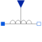

VariableInductorIdeal linear electrical inductor with variable inductance |

|
Information
This information is part of the Modelica Standard Library maintained by the Modelica Association.
The linear inductor connects the branch voltage v with the branch current i by
v = d Psi/dt with Psi = L * i .
The inductance L is as input signal.
It is required that L ≥ 0, otherwise an assertion is raised. To avoid a variable index system, L = Lmin, if 0 ≤ L < Lmin, where Lmin is a parameter with default value Modelica.Constants.eps.
Besides the Lmin parameter the inductor model has got the two parameters IC and UIC that belong together. With the IC parameter the user can specify an initial value of the current that flows through the inductor.
Hence the inductor has an initial current at the beginning of the simulation. The other parameter UIC is of type Boolean. If UIC is true, the simulation tool uses
the IC value at the initial calculation by adding the equation i= IC. If UIC is false, the IC value can be used (but it does not need to!) to calculate the initial values in order to simplify the numerical algorithms of initial calculation.
Parameters (3)
| Lmin |
Value: Modelica.Constants.eps Type: Inductance (H) Description: lower bound for variable inductance |
|---|---|
| IC |
Value: 0 Type: Current (A) Description: Initial Value |
| UIC |
Value: false Type: Boolean |
Connectors (3)
| p |
Type: PositivePin Description: Positive electrical pin |
|
|---|---|---|
| n |
Type: NegativePin Description: Negative electrical pin |
|
| L |
Type: RealInput |
Used in Components (1)
|
Modelica.Electrical.MultiPhase.Basic
Ideal linear electrical inductors with variable inductance |